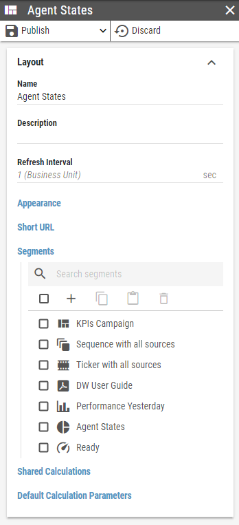
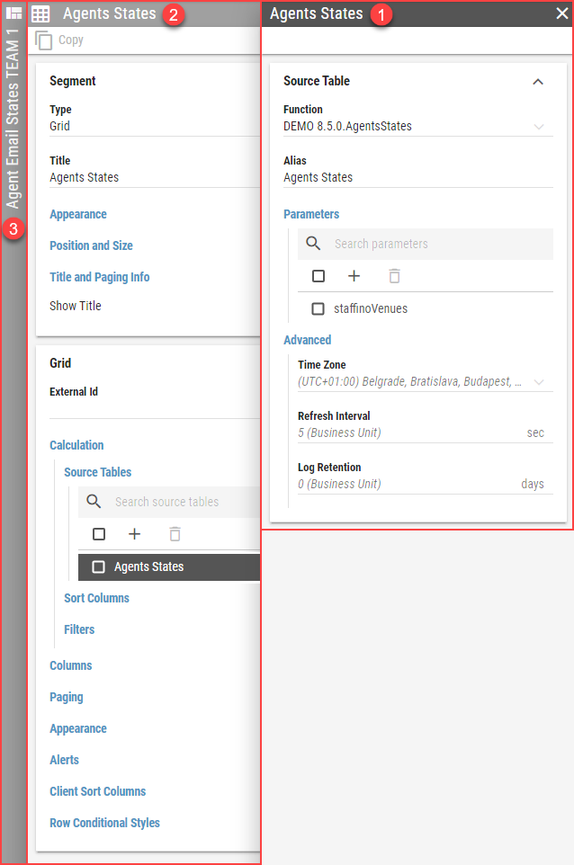

Panels¶
A panel is a vertical set of configuration options that typically describe a single record such as a Layout, Kpi or similar.
Figure 1: Layout panel
A panel may contain options, that navigate into an another panel. For example, when a list item is clicked, a new panel is opened, containing all its options. The previous parent panel becomes semi visible while the child panel takes its place. A keyboard focus is always moved onto the newly opened panel. Only one panel is active at any given moment.
Figure 2: Multiple panels opened at the same time
When multiple panels are opened at the same time, their appearance changes based on their position:
Active panel – right-most panel, that is fully displayed and fully focused. The header is colored in darker shade, than the rest of the panels.
Parent panel – parent of the active panel is semi visible. Most interactions with the Parent panel close the child panel and make the parent panel active. Parent panel is then moved to the right-most position. When a sibling of the child panel is selected in the parent panel, the child panel is not closed. Instead its fields are populated with the sibling’s data
The rest of the panels stack to the left. Only their header is visible, which is rotated vertically.
Clicking on a header of any panel will make that panel active, effectively closing all of its child panels. The active panel can also be closed by clicking the X button located on the right side of its header.
Closing the left-most Layout panel will exit the Edit mode. If there are unpublished changes, the user is prompted to either perform a Publish or Discard first.